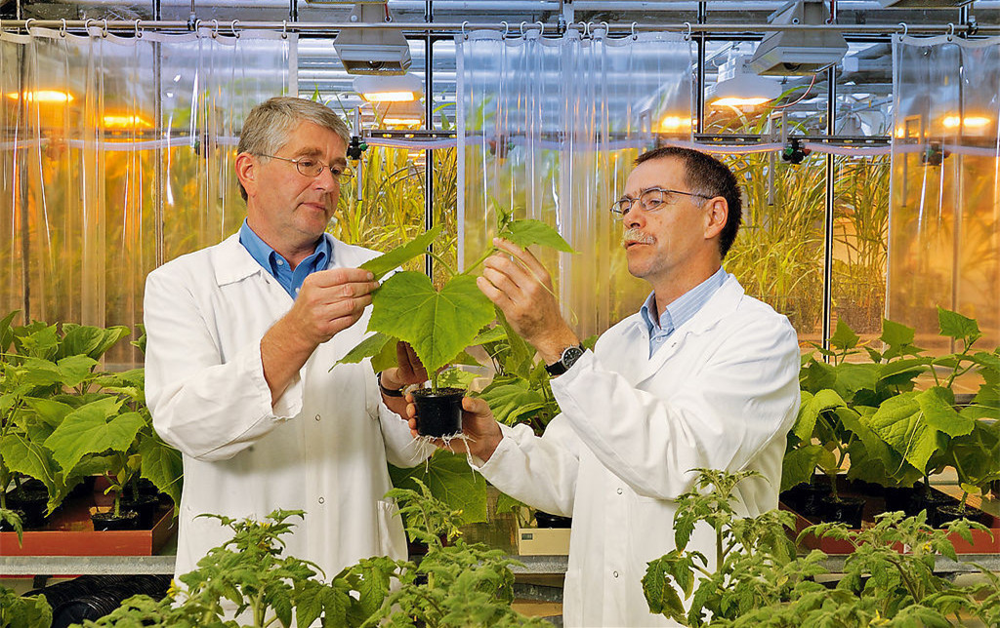
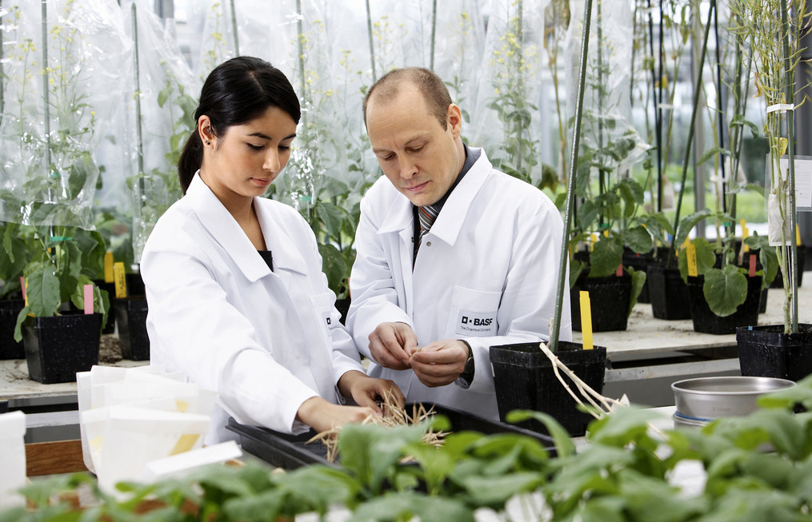
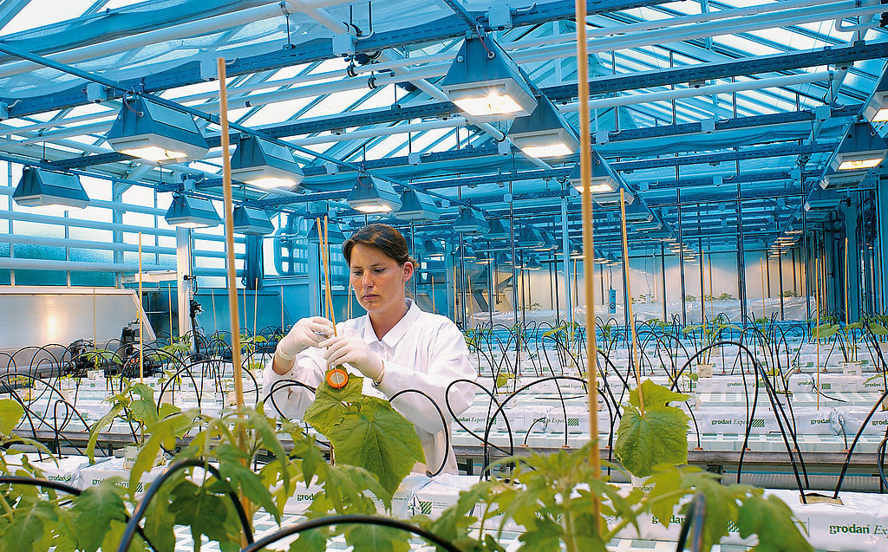
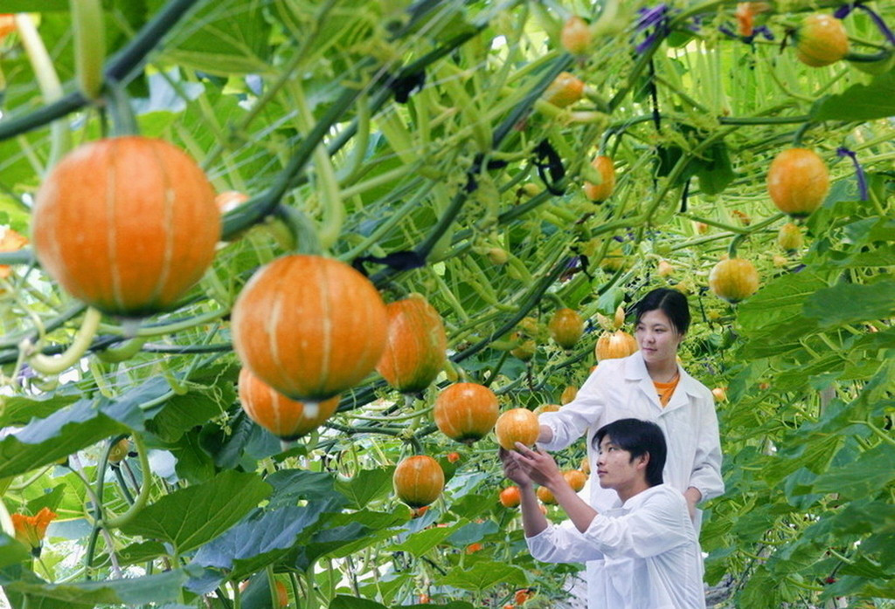
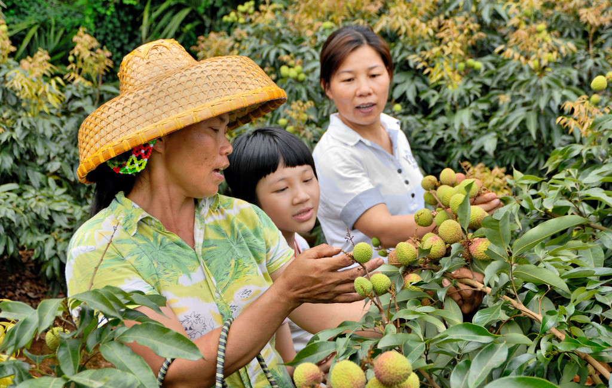

- UAV agricultural application
- Modern farm
- Mechanized harvesting
-  Modern greenhouse
-  Mechanized harvesting

李家洋分别会见国际玉米小麦改良中心主任和国际水稻研究所所长
8月15-16日，农业部副部长、中国农业科学院院长李家洋分别会见了来华参加“第七届国际作物科学大会”的国际玉米小麦改良中心（ CIMMTY）主任马丁•克罗波夫（Martin Kropff） 一行和国际水稻研究所（IRRI）所长马修•莫雷尔（Matthew Morell）一行，就继续推进双方今后在相关领域的合作进行了深入交流。

第二届中韩药用植物国际化战略研讨会在韩召开
7月5-6日，由中国农业科学院特产研究所与韩国农村振兴厅国立园艺特作科学院共同主办的， 第二届中韩药用植物国际化战略研讨会在韩国召开， 中韩两国专家学者共120余人参加本次会议。
茶叶所与恩施州签订科技战略合作协议
为充分发挥茶叶所在茶叶科技、人才、信息等方面的资源优势，助推国家“精准扶贫”战略在恩施的顺利实施， 7月6日，中国农业科学院茶叶研究所与湖北省恩施州人民政府在恩施签订战略合作协议。 茶叶所党委书记姜仁华和恩施州委书记、州人大常委会主任王海涛到会并致辞。 茶叶所副所长鲁成银和恩施州州长刘芳震分别代表双方签订协议。
吴孔明会见国际生物防治组织主席
5月19日，中国农业科学院副院长吴孔明会见了来访的国际生物防治组织主席芭芭拉•巴勒特（Barbara Barratt） 博士一行，双方就加强在生物防治领域的合作交换了意见。
一个央企下海者的种业梦
大华山，一个满是桃树的地方。从北京天安门向东北方向90多公里，就可以到达这个群山环绕的小镇。与喧嚣的城区相比，这里已然偏僻。但对于种子培育来说，这里恰恰是不可多得的好地方。 技术员陈军告诉法治周末记者，大华山是桃产业基地， 基本没有蔬菜种植户，空气中的花粉比较单一， 特别适合种子培育。此外，这里远离城市，没有污染。
水稻育种追梦人姚海根
中广网北京8月8日消息 据中国乡村之声《爱在乡村》报道： 今年69岁的姚海根是浙江省水稻育种重大攻关项目首席专家、嘉兴农科院名誉院长。1965年大学毕业后， 姚海根便进入农科院从事水稻、陆稻的品种选育工作。 1974年，姚海根踏上了海南南繁育种之路，一走就是40年。
袁隆平与华媒分享“中国梦”：杂交水稻覆盖全球
中新社长沙7月7日电 (记者 唐小晴 邓霞)“我有两个‘中国梦’，一个是水稻能长成高粱般的高度，稻穗如扫帚般长，谷粒如花生般大， 亩产1000公斤的目标能尽快攻克；另一个是杂交水稻覆盖全球。” 中国工程院院士、“杂交水稻之父”袁隆平如是描绘着自己的愿景。
裘志新：一生倾情小麦育种
宁春4号——一个在西北、华北地区广为种植的优良春小麦品种 以其突出的丰产性、广泛的适应性、优良的品质创下了26年久种不衰的奇迹。 截至目前，宁春4号累计推广面积近1亿亩， 增产小麦50亿公斤，新增产值50亿元。 这项科研成果的主要创造者，就是宁夏区永宁县小麦育种繁殖所所长、小麦育种专家裘志新。
- 李家洋分别会见国际玉米小麦改良中心主任和国际水稻研究所所长
- 第二届中韩药用植物国际化战略研讨会在韩召开
- 茶叶所与恩施州签订科技战略合作协议
- 吴孔明会见国际生物防治组织主席
- 一个央企下海者的种业梦
- 水稻育种追梦人姚海根
- 袁隆平与华媒分享“中国梦”：杂交水稻覆盖全球
- 裘志新：一生倾情小麦育种
- 玉米育种家程相文：用育种精神传递正能量
- 黄大昉：我为什么支持转基因
- 年轻育种人陈世建：培育优质水稻母本
- 结束我国优质小麦依赖进口的历史
- 育种专家的十八大“礼物”
- 登海种业董事长李登海：玉米之父情系农业产业报国
- 中国农科院专家获何梁何利基金奖
- 水稻育种专家--端木银熙(图)
- 小麦育种专家赵瑜
- 马铃薯脱毒专家--王炳君